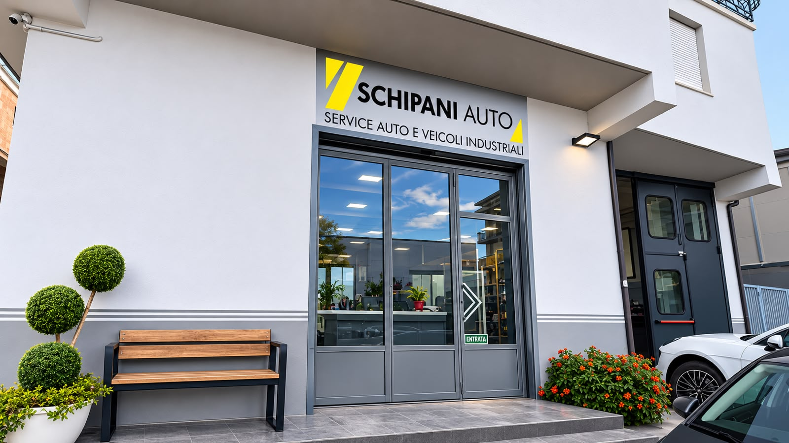
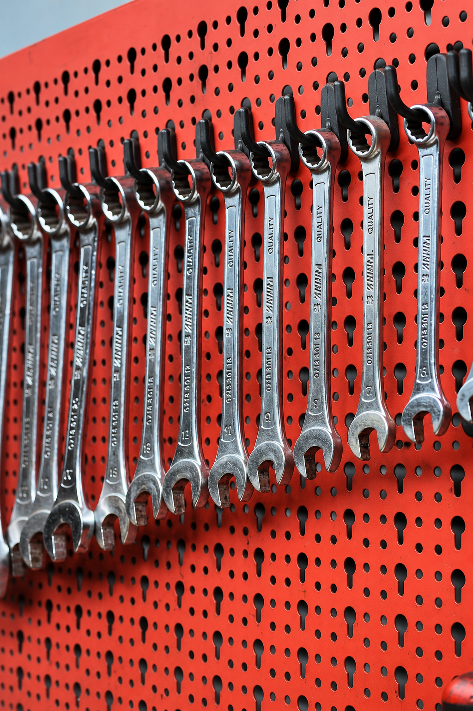

Regime fiscale da verificare
La classificazione del mezzo può comportare un trattamento diverso della tassa automobilistica, secondo la disciplina applicabile.
La trasformazione con targa gialla può essere valutata per determinati utilizzi professionali, ma richiede precise condizioni tecniche e amministrative. Raccontaci che mezzo hai: Schipani Auto, con il supporto di partner esterni specializzati, effettua una prima verifica preliminare.
Compila il modulo: al termine si aprirà WhatsApp con il messaggio già pronto da inviare a Schipani Auto.
La convenienza effettiva cambia in base alle caratteristiche del veicolo, all'impiego e alle norme applicabili. Ogni situazione va analizzata singolarmente.
La classificazione del mezzo può comportare un trattamento diverso della tassa automobilistica, secondo la disciplina applicabile.
Potrebbero esserci condizioni assicurative differenti rispetto a un autocarro tradizionale, da verificare con la compagnia.
Il mezzo viene destinato alle funzioni consentite dalla sua nuova classificazione, nel rispetto dei limiti previsti.
Se stai acquistando un autocarro e pensi di trasformarlo in macchina operatrice, contattaci per valutare la possibilità di evitare i costi del passaggio di proprietà.
Servono controlli documentali, verifiche tecniche e la corretta procedura di omologazione o aggiornamento prevista per il singolo veicolo.

Una richiesta semplice per capire se ha senso approfondire la pratica.
Compila il modulo con i dati del mezzo e invia la richiesta tramite WhatsApp.
Schipani Auto verifica le informazioni e, quando necessario, coinvolge partner esterni specializzati.
Se il caso è tecnicamente e amministrativamente percorribile, ricevi indicazioni sui prossimi passaggi.
È il formato di targa associato, fra gli altri, a specifiche categorie di macchine operatrici o agricole. La targa, da sola, non riassume tutte le condizioni d'uso del veicolo.
No, è consentito soltanto il trasporto di cose o attrezzature inerenti al ciclo operativo della macchina o del cantiere, secondo la classificazione del veicolo.
Sì, per le macchine operatrici non eccezionali, nel rispetto dei limiti di sagoma e massa previsti. Per le macchine operatrici eccezionali è richiesta la patente C1.
La classificazione come macchina operatrice può comportare un diverso regime della tassa automobilistica e condizioni assicurative agevolate. In ogni caso, verifica sempre con la tua compagnia assicurativa. Per la revisione periodica, occorre verificare le disposizioni operative applicabili alla tipologia di mezzo.
In ogni caso Schipani Auto cercherà sempre di soddisfare le richieste.
Schipani Auto opera dal 1982 a Foresta di Petilia Policastro (KR). Per le richieste legate alle trasformazioni in macchina operatrice si avvale anche del supporto di partner esterni specializzati.
Raccogliamo richieste da tutta Italia, partendo da un dato concreto: le caratteristiche reali del tuo veicolo.
Scopri l'officina →
